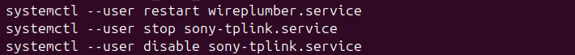

Bluetoothi heli: automaatühenduse teenuse peatamise järel jäi heli tööle
Ubuntu all kadus välise kõlari heli uuesti. WirePlumberi taaskäivituse järel hakkas heli vahelduma sisse-välja.
- Käivitati
systemctl --user restart wireplumber.service. Kasutaja teatas seejärel vahelduvast helist. - Peatati kohandatud ühendusteenus:
systemctl --user stop sony-tplink.service. - Eemaldati selle automaatkäivitus:
systemctl --user disable sony-tplink.service. Terminal kinnitas käivituslingi eemaldamist. - Kasutaja kinnitas: „nüüd jäi tööle seni”.

Seis: ajutiselt stabiilne heli. Kinnituse kestus pole allikast teada. Teenuse peatamise järel saadud tulemus ei tõenda veel püsiparandust ega ragisemise algpõhjust.